NPG Lite SNES#
Overview#
NPG Lite SNES connects to Neuro PlayGround Lite over Bluetooth to read your body’s electrical signals (EMG, EEG, EOG, ECG). It records bio-potential signals such as flexing a muscle, blinking your eyes, clenching your jaw or focusing, and converts them into standard Xbox controller button presses. This lets you play almost any PC game using just your mind and body.
The app is a free download for Windows from the NPG-Lite-SNES repository.
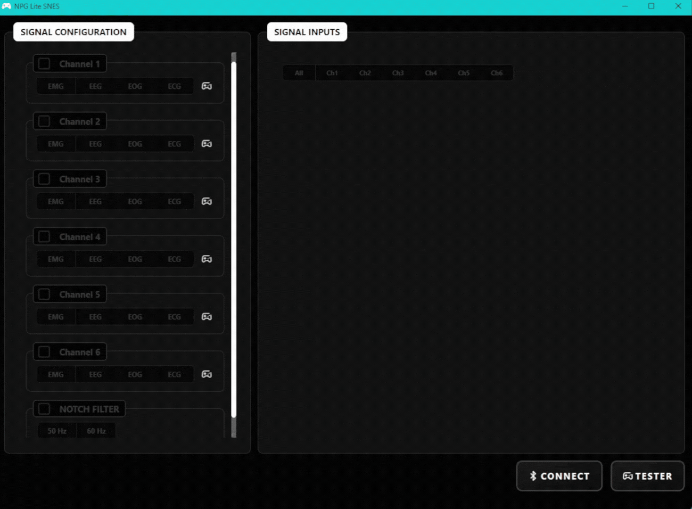
NPG Lite SNES Tutorial#
Features#
Feature |
Description |
|---|---|
Wireless |
Connects wirelessly to the NPG Lite device over Bluetooth Low Energy (BLE). |
Up to 6 Bio-potential Signals |
Supports up to 6 channels processing muscles (EMG), brainwaves and blinks (EEG), eye movements (EOG) and heartbeats (ECG). |
Custom Mapping |
A simple UI that lets you choose which action (like a “Double Jaw Clench”) triggers which button (like the “A” button or “DPAD” keys). |
Zero Config |
The app automatically handles and installs the required virtual Xbox controller driver ( |
Built-in Tester |
See your body signals light up in real time and test your virtual controller before jumping into a game. |
Hardware Requirements#
Neuro PlayGround Lite (Explorer, Ninja or Beast pack)
BioAmp snap cables and gel electrodes (2 per signal, plus 1 shared reference)
NuPrep skin preparation gel (optional) and alcohol swabs
USB Type-C cable
A Windows PC with Bluetooth
Software Requirements#
Windows 10 or 11 with Bluetooth Low Energy support
NPG-Lite BLE Wireless firmware flashed on the device, using NPG-Lite-Flasher-Web or the NPG Lite Flasher desktop app
Setting up the hardware#
Flashing the firmware#
Turn on your NPG Lite using the power switch and make sure the battery is connected correctly.
Connect the NPG Lite to your computer with the USB Type-C cable.
Open NPG-Lite-Flasher-Web in a Chromium-based browser (Chrome, Edge, Brave, etc.).
Click Connect and select the USB device named USB JTAG.
Select the BLE Wireless firmware and click Flash.
Wait a few seconds while the firmware is uploaded, then disconnect the USB cable.
Preparing your skin#
Good skin preparation gives a much cleaner signal.
Clean the areas where the electrodes will go with an alcohol swab or wet wipe.
For an even better signal, you can first apply a small amount of NuPrep skin preparation gel and then clean the skin.
Let the skin dry before placing the electrodes.
Tip
For more details, see Skin Preparation and Using Gel Electrodes.
Placing the electrodes#
Choose the signals you want to use and place the electrodes as shown in the diagrams. Each signal needs one positive (red) and one negative (black) electrode. The reference (yellow) electrode is shared across all channels, so you only need to place one.
EMG (flexing a muscle)#
Place the positive and negative electrodes close together on the muscle you will flex, for example your forearm.
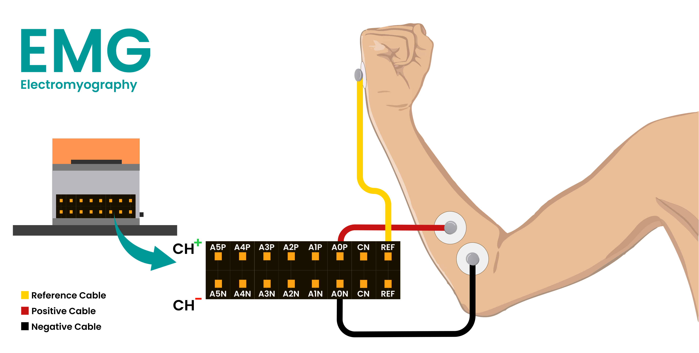
EMG Placement#
EEG (focus, blink, jaw clench)#
Place the positive electrode on the centre of your forehead and the negative electrode behind one ear.
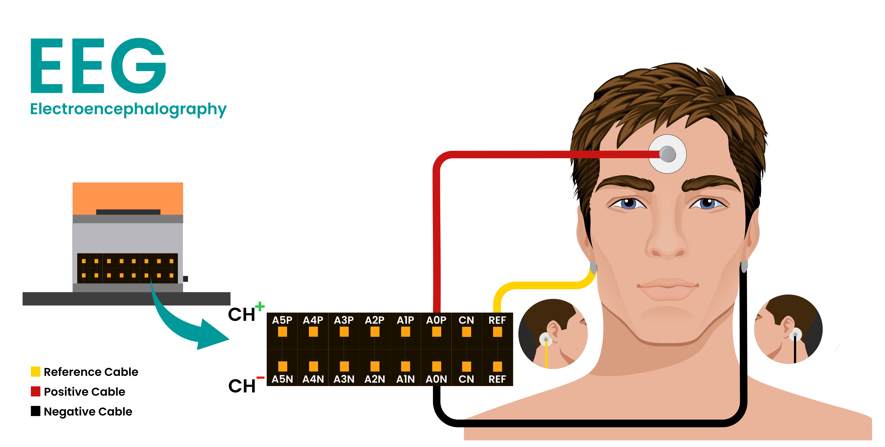
EEG Placement#
EOG (eye movement)#
Place the negative electrode at the outer corner of your right eye and the positive electrode at the outer corner of your left eye. If left and right eye movements appear swapped in the app, swap the red and black cables.
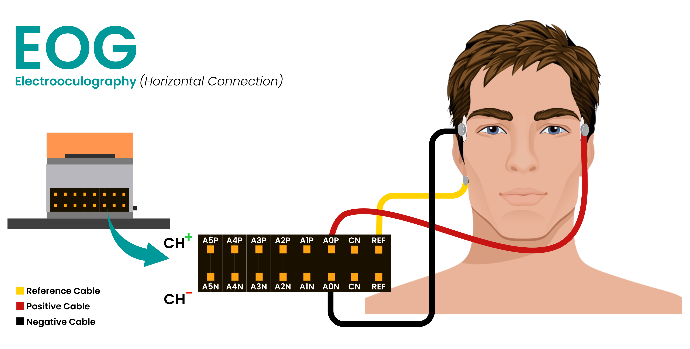
EOG Placement#
ECG (heartbeat)#
Place the negative electrode on the left side of your chest just below the collarbone, and the positive electrode slightly to its right with a small gap between them.
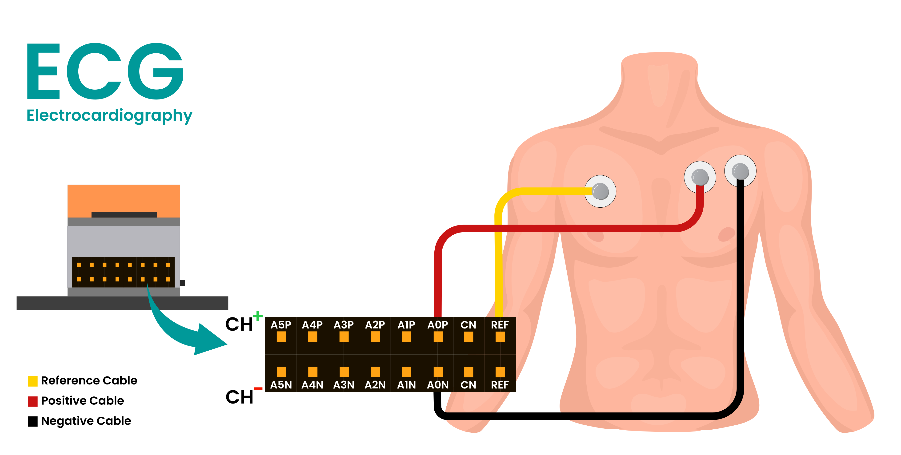
ECG Placement#
Connecting the cables#
Connect the red and black cables of each signal to the + and - pins of one channel, and the reference cable to REF. You can use any channel for any signal.
Channel |
+ pin |
- pin |
|---|---|---|
Channel 1 |
A0P |
A0N |
Channel 2 |
A1P |
A1N |
Channel 3 |
A2P |
A2N |
Channel 4 |
A3P |
A3N |
Channel 5 |
A4P |
A4N |
Channel 6 |
A5P |
A5N |
Note
Only the NPG Lite Beast pack comes with 6 channels. The Explorer and Ninja packs support only 3 channels.
Remember which channel you used for each signal, because you will select it in the app. For example: EMG on Channel 1, EEG on Channel 2 and EOG on Channel 3.
Installing the application#
The easiest way to use the app is to grab the pre-built standalone .exe file.
Download the latest
NPG-Controller.exefrom the Releases / GitHub Actions tab.Double-click the file to open it. The first time you run it, it will ask for admin permissions to quickly install the
ViGEmBusdriver. This allows Windows to see your body as a real Xbox controller.Follow the steps below.
Connecting to NPG Lite SNES#
Turn on your NPG Lite with the On/Off switch and click CONNECT. The app scans for NPG Lite devices for up to 10 seconds and connects to yours. If it finds more than one, pick yours from the list. When it is connected, the button changes to DISCONNECT, and the battery level and “Virtual gamepad connected” appear at the bottom left.
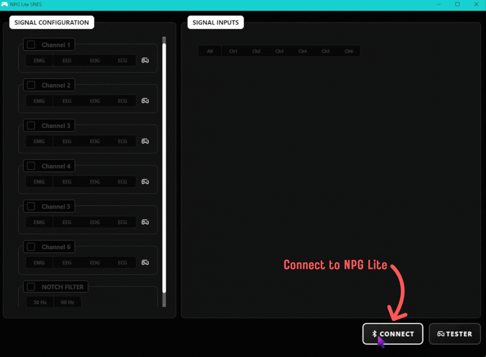
Connect#
Using the application#
Selecting the channels#
Tick the box of every channel you connected in the setup. Only ticked channels are used.
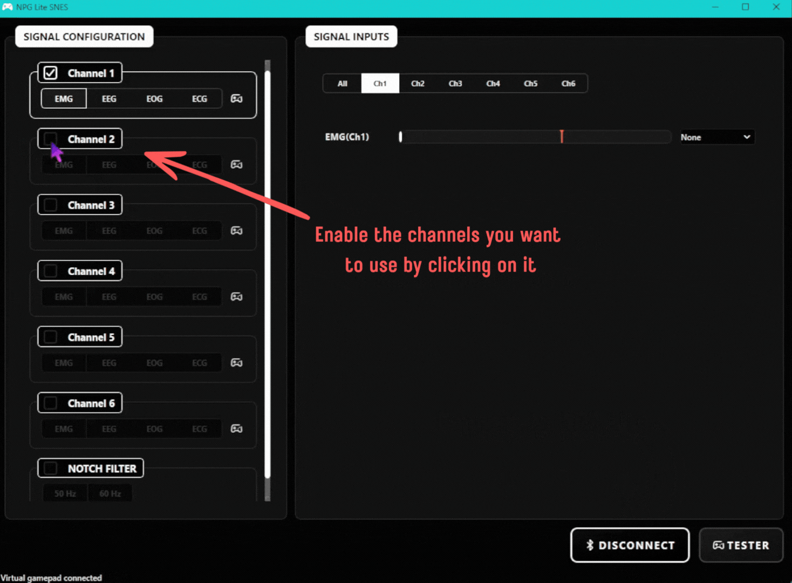
Select Channels#
Selecting the filters#
For each ticked channel, choose the signal it records: EMG, EEG, EOG or ECG. This applies the right filters for that signal. EEG, EOG and ECG can each be used on only one channel, and any other channels must be EMG.
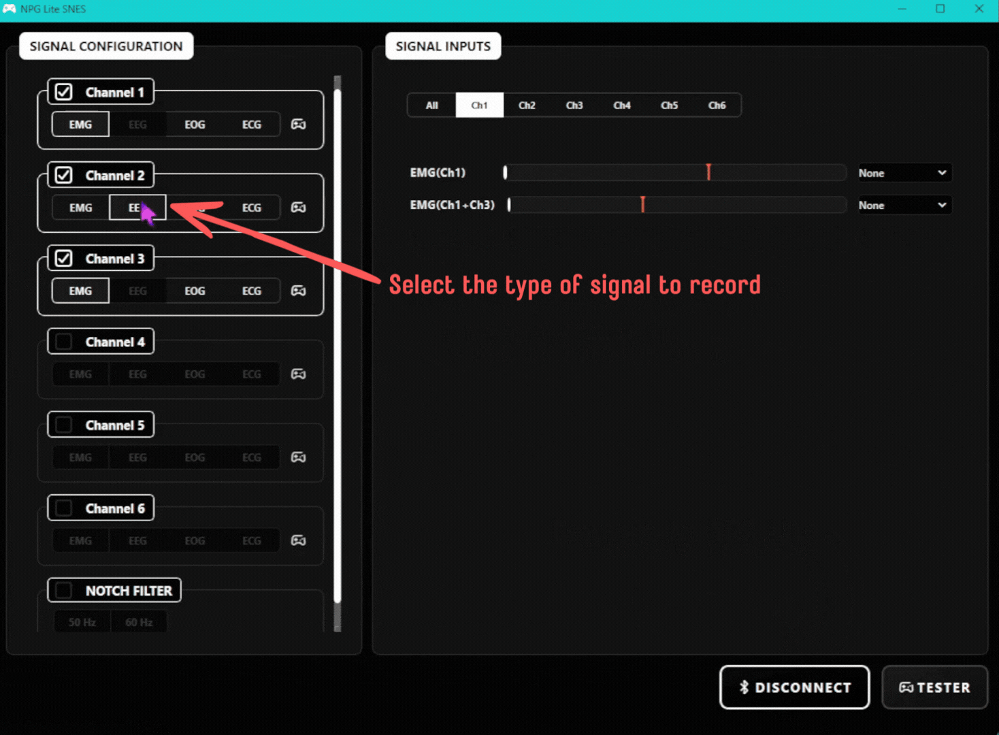
Select Filters#
Enabling the notch filter#
Tick NOTCH FILTER and choose 50 Hz or 60 Hz to match the power line frequency in your region. Most countries use 50 Hz, and countries like the USA and Canada use 60 Hz. This removes power line noise from the signals.
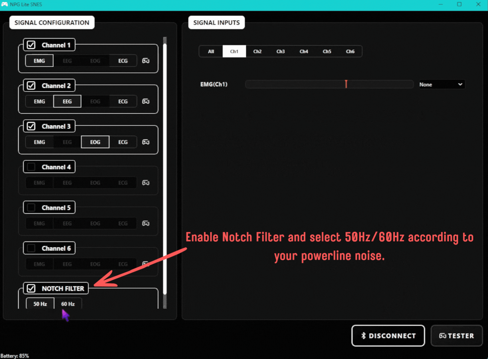
Enable Notch Filter#
Setting the thresholds#
In the Signal Inputs panel, open the tab of a channel (or All). Each signal has a bar with a red marker, which is its threshold. Perform the gesture and watch the bar. When the signal goes past the marker, the gesture is detected. Drag the marker to just below the level your gesture reaches, and above the level when you are relaxed, so it does not trigger by accident.
The signals you can set, depending on the type you chose above:
EMG: one bar for each EMG channel. With two or more EMG channels, extra bars such as
EMG(Ch1+Ch3)appear for using both muscles together.EEG: Focus, Blink and Jaw Clench.
EOG: Left Eye, Right Eye and Jaw Clench.
ECG: your heartbeat.
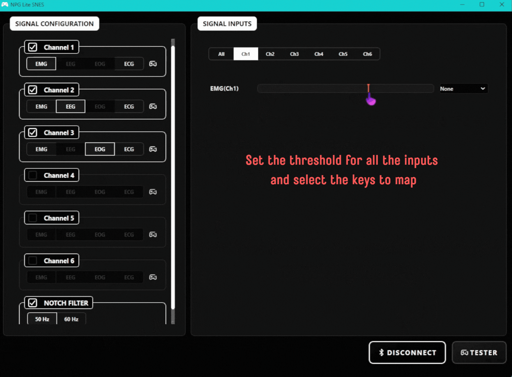
Set Thresholds#
Mapping gestures to controller keys#
Next to each bar, use the drop-down to choose the controller key that the gesture presses: A, B, X, Y, Dpad Up, Dpad Down, Dpad Left, Dpad Right, L, R or Start. Choose None to leave a gesture unused. The key stays pressed for as long as the gesture is detected.
For EEG channels, you can also tick Double Blink or Triple Blink, and for EEG and EOG channels Double Jaw Clench, then choose a key for each. These press the key once each time you do the gesture.
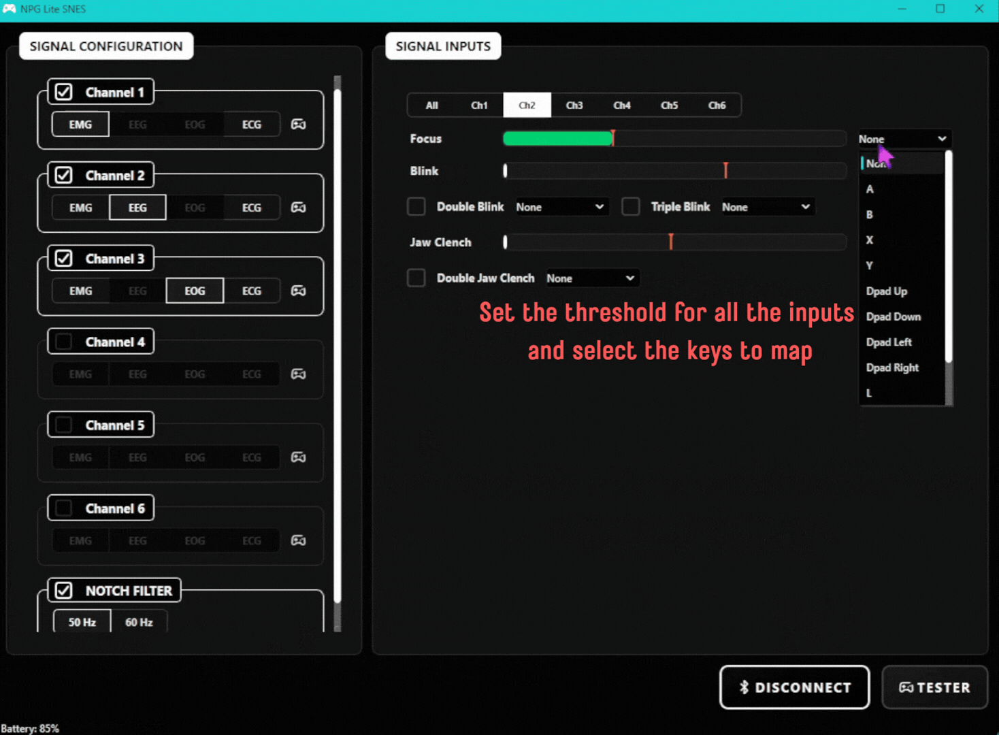
Configure Controls#
Testing the controls#
Click TESTER to open a virtual SNES controller. Perform your gestures and watch the matching buttons light up. If a button lights up by mistake or does not light up, go back and adjust its threshold or key. Click CLOSE TESTER when you are done.
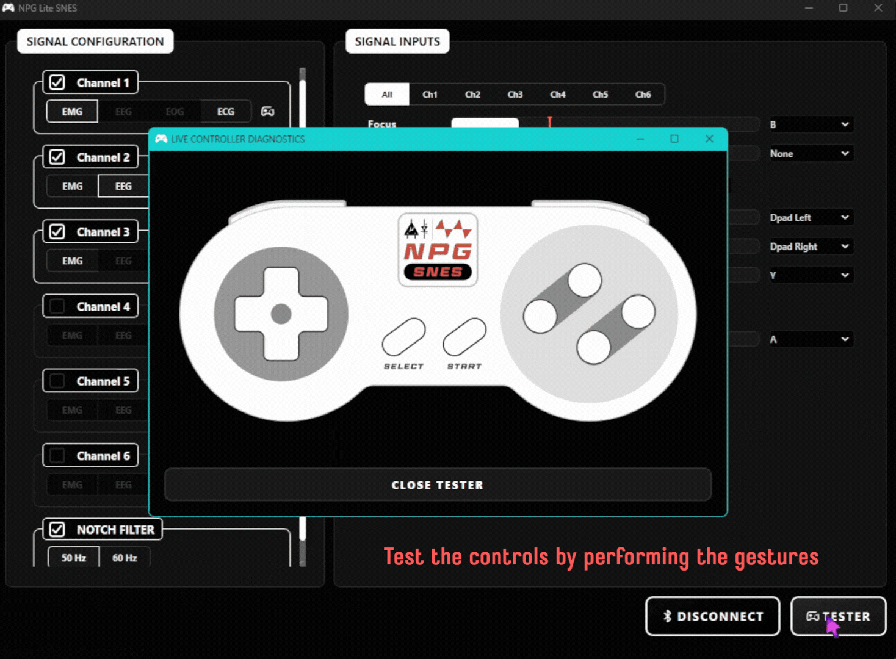
Open Tester#
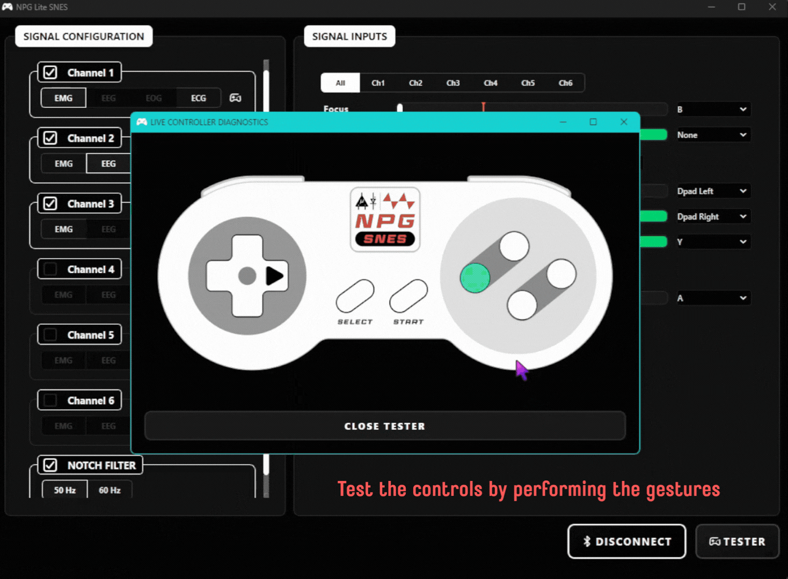
Test Controls#
Once everything works, open your game. It sees your body as a real Xbox controller, so you can launch it and play!
Running from source (for developers)#
If you want to view or edit the code directly, you need a Windows PC with Python 3.11.
Clone the NPG-Lite-SNES repository.
git clone https://github.com/upsidedownlabs/NPG-Lite-SNES.git
Open a terminal in the project folder, then create and activate a virtual environment:
python -m venv .venv .venv\Scripts\activate
Install the required libraries:
pip install -r requirements.txt
Run the main script:
python main.py
The first time you run it on a PC that does not have the ViGEmBus driver, the app downloads the installer and Windows asks for admin permission to install it.
Building the .exe yourself#
After installing the requirements above, run:
pyinstaller build.spec
The .exe is created in the dist folder as NPG Lite SNES.exe. The first build downloads the ViGEmBus installer (about 6 MB) and bundles it into the .exe.